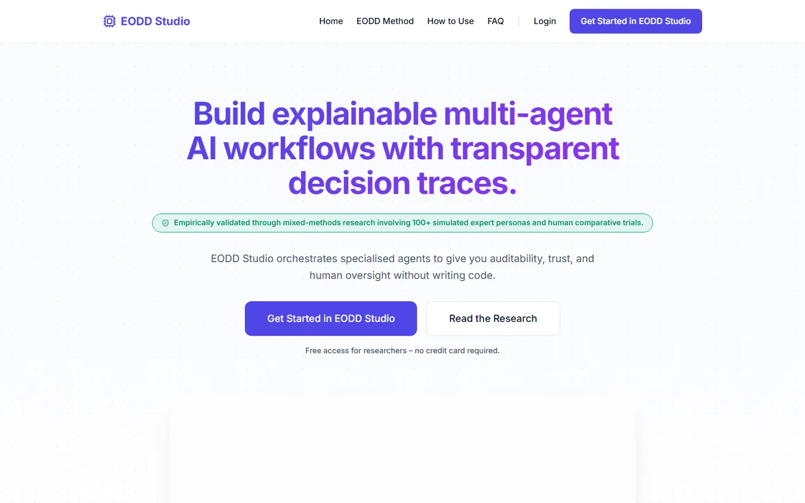

EODD
可解释 AI 决策界面
让第三步的推理，能被第二个人复核。
01背景 · 约束
问题不是「解释不清」，是「没有人会读完」
高风险场景里，多个智能体分工推演，最后一步由人确认。系统必须能说出自己的推理过程——但这条链常常有二十多步。
传统做法是加解释：把链铺在下面，让用户自己读。可用性测试里没人读。真正的问题不是信息不足，是没有人会把它读完。
我要做的不是让解释更详细，是让人能跳到某一步，而不是顺序读完。
三条约束
- 决策必须可读。不能要求人读完整条链，否则等于没有解释。
- 必须可追责。谁驳回哪一步，要有记录。
- 不能增加心理负担。解释更多，但不能更累——这是我最担心的那条。
我的角色（边界写清楚）
图表与可视化
论文图表与数据可视化由我产出；界面方向由我定
用户实验
我设计、执行、做数据分析
论文写作
团队共同完成，我不承担主笔
投稿状态
待确认（未能与团队取得联系）
研究框架与论文由团队负责；我把实验设计、执行、统计分析与结果可视化这一段做到底。不承担：可交互原型的编码、论文写作与文献综述。
三阶段实证
| 阶段 | 样本 | 验的是什么 |
|---|---|---|
| Phase 1 | N = 5 专家 | 专家启发式走查，先证明这套轨迹读得下去 |
| Phase 2 | N = 100 LLMs-as-Experts | 交叉标注，看判定是否可复制 |
| Phase 3 | N = 16 within-subjects | 测可解释性、可信度、找错能力与心理负担 |

论文
02判断 1 / 3
可解释不是「多给信息」
当时的处境
系统给的推理过程有二十多步
我以为
全部展示，人才能信
实际是
全展开没人读；人要的是「能跳到某一步」
所以我改了
轨迹改成可展开、可标记、可驳回的树状结构
代价
得额外设计「当前在第几步」，否则人会在树里迷路
树状结构本身不是目的。目的是让人能问出那句真正的问题：「就是这一步错了」——然后直接跳过去，而不是从头读到尾。
来自访谈
「我没有办法在五分钟里读完二十步。」
据此否决
一个总览页、把整条推理链铺开的第一版
03判断 2 / 3
没有「部分相信」这种状态
当时的处境
用户在「全信」和「不用」之间
我以为
中间会有「部分相信」这种状态
实际是
没有中间态：不能复核的东西，人不会拿它做重要决定
所以我改了
每条结论必挂证据，不给证据就不出结论
代价
系统要在生成时就保留引用，成本前移到工程侧
这条判断把设计问题变成了工程问题：如果界面要求「每条结论都能点开看证据」，那系统就必须在生成阶段留下引用。不能事后补。
两套系统的结构对照
下图不是插画，是论文里那张结构对照图的可读化重排：上面是单体黑箱，下面是四角色分工——同样宽度、同样层级，比的是结构，不是视觉。
MONOLITHIC · SYSTEM X
Inputevidence
→
Opaque internalsno record of which step decided what
→
Answerno trace
「I have no idea how it got there, so I can't tell if it's right.」 — Phase 3 参与者
EODD · SYSTEM Y
Inputevidence
→
Reasonerevidence analysis, initial conclusion
→
Checkerconstraint & logic validation
→
Ethics Reviewerprinciples, values, potential harms
Human checkpointinspect & challenge
Decision tracerationale · contributions · assumptions · confidence
Human checkpointoverride if needed
「I can see exactly where the reasoning went wrong.」 — Phase 3 参与者
04判断 3 / 3
解释得更多，不能让人更累
这是整册唯一一处「用实验验证了设计假设」的地方——而且验证的是我自己担心的那件事：加了这么多解释，认知负担会不会反而上去。
当时的处境
担心增加解释会加重认知负担
我以为
看得越多越累
实际是
p = .37：心理负担没有显著增加（N=16）
所以我改了
保留完整轨迹，不为「省力」裁剪
代价
界面密度高，必须靠结构而不是靠留白来控制
决策轨迹的四个必填字段
aRationale Log每一步的推演记录，含证据、判断、结论。
bRole Contributions哪个智能体贡献了什么，可归因到具体角色。
cAssumptions被显式写下的假设，逐条可判有效或无效。
dConfidence Scores每个智能体对自身结论的自评置信度。
论文图（我绘制）的结构改写为可读版：从「一张流程图」变成「四个可填的字段」。
d = 1.81
M = 5.11 vs 2.48 · t(15) = 7.23 · p < .001
轨迹质量的提升，是三组里最大的。
轨迹质量的提升，是三组里最大的。
05实证 · N=16
四个数，只有一个是好消息需要解释的
| 指标 | 值 | 它意味着什么 |
|---|---|---|
| 可解释性 | d = 1.61 | p < .001 |
| 可信度 | d = 1.47 | p < .001 |
| 找错能力 | d = 1.18 | p < .001 |
| 心理负担 | p = .37 | 我担心的那件事没有发生 |
| 专家可行性 | 5.66 / 7 | 专家给可行性打的分（满分 7） |
| 偏好 | 76.2% | 更偏好 EODD 方案 |
| 领域摩擦 | 47% | 无显著摩擦的用例占比 |
三阶段：N=5 专家启发式 → N=100 LLMs-as-Experts → N=16 within-subjects。论文为团队成果，投稿状态待确认；论文图表与数据可视化由我产出。
如果这个数字反过来了——如果 p 显著、负担真的上去了，我会砍掉轨迹的默认展开，只留「出问题时才展开」。
先定好否决条件，数字才有意义。
先定好否决条件，数字才有意义。